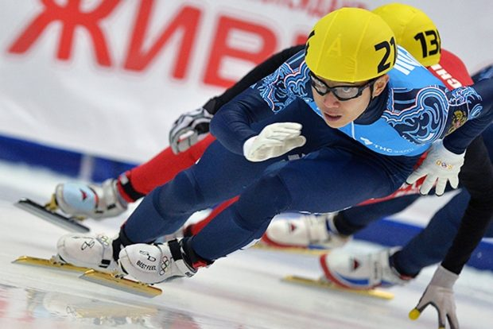
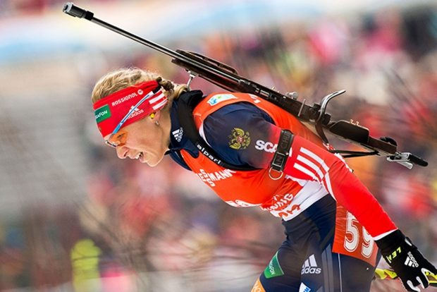
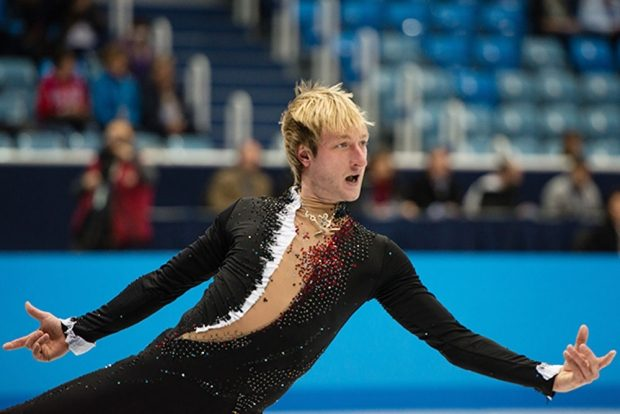
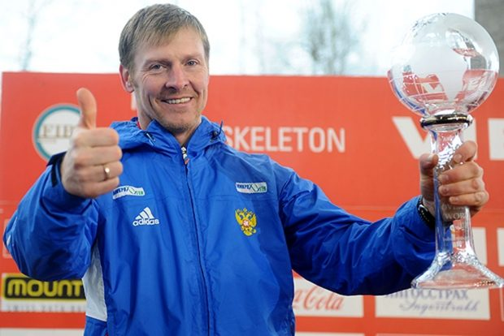
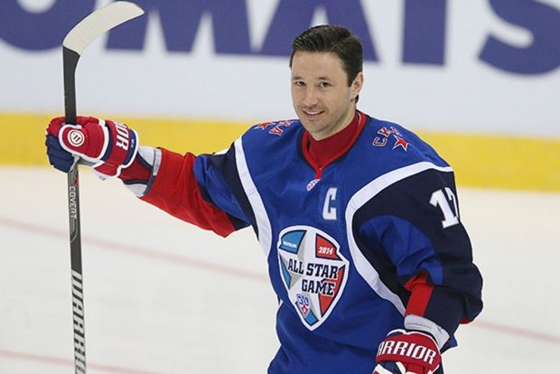

|
| Главная |
Виды |
Гордость России |
|
Спортсмен |
Вид спорта |
Заслуги |
| Виктор Ан  |
Шорт-трек |
Самый титулованный спортсмен в истории мирового шорт-трека носит довольно необычное для россиянина имя — Ан Хен Су. До декабря 2011 года шорт-трекист представлял Южную Корею, однако затем получил российский паспорт и стал не только Виктором, но и единственным в России трехкратным чемпионом зимних Олимпийских игр, продолжающим свою карьеру.
Решение выступать за Россию Ан Хен Су принял после того, как не смог отобраться в сборную Южной Кореи на Олимпиаду в Ванкувере. Это стало следствием тяжелой травмы и перенесенной операции, после которой конкуренцию на родине экс-рекордсмен мира на дистанциях 1000, 1500 и 3000 метров не выдержал. Спортсмен, являющийся пятикратным абсолютным чемпионом мира, двукратным обладателем Кубка мира, уже успел дважды выиграть чемпионат России и отобраться на домашнюю Олимпиаду в Сочи. |
| Ольга Зайцева  |
Биатлон
| Лидер российских биатлонисток дважды становилась олимпийской чемпионкой в эстафете – Турин-2006 и Ванкувер-2010. Также на ее счету есть серебро, выигранное в масс-старте на провальной для сборной канадской Олимпиаде. Несмотря на неудачи российского биатлона в последние годы, Зайцева может рассчитывать на успех в Сочи. Она много лет входит в элиту мирового биатлона и до сих пор, играючи, расправляется со всеми партнерами по команде — как на огневых рубежах, так и на лыжне. |
| Евгений Плющенко  |
Фигурное катание
| Олимпийский чемпион Турина Евгений Плющенко вернулся в большой спорт ради Игр в Сочи, где он претендует на золотые медали. Год назад десятикратный чемпион России перенес тяжелейшую травму позвоночника, сложную операцию, во время которой ему в спину вставили титановые пластины. Поэтому от одиночной программы в Сочи спортсмен отказался в пользу командного первенства.
На Олимпиаде у России лишь одно место в одиночном фигурном катании, здесь вместо Плющенко будет выступать 18-летний Максим Ковтун, выигравший у своего легендарного визави на чемпионате России.
После выступления в команде Плющенко сможет завершить Игры, но при любом результате они станут для спортсмена особенными – он войдет в историю как единственный фигурист, выступивший на четырех Олимпиадах. Евгений дважды выигрывал серебро – в Солт-Лейк-Сити-2002 и Ванкувере-2010, а также стал чемпионом в Турине-2006. Плющенко – трехкратный чемпион мира, семикратный чемпион Европы, первый в мире фигурист, который сумел четырежды победить в финалах мировой серии Гран-при. |
| Александр Зубков  |
Бобслей
| К Олимпиаде в Сочи бобслеист Александр Зубков по собственному желанию покинул должность министра физической культуры, спорта и молодежной политики Иркутской области. «Я нужен России» – так он охарактеризовал свое неожиданное возвращение в спорт.
Зубков – легенда российского бобслея. Он сумел создать команду, которой удалось взять серебряные и бронзовые медали Олимпиады. В 2011 году экипаж под управлением Зубкова впервые в истории России сумел завоевать золото чемпионата мира. На счету бобслеиста — семь побед на этапах Кубка мира. На прошлом мировом первенстве российская четверка завоевала серебро, проиграв немцам, но опередив действующих олимпийских чемпионов из США. |
| Илья Ковальчук  |
Хоккей
| Главная медаль Олимпийских игр в Сочи будет разыграна на льду. Один из основных претендентов на золото – сборная России по хоккею. В ее составе значатся сразу четыре суперзвезды мирового уровня – Александр Овечкин, Евгений Малкин, Павел Дацюк и Илья Ковальчук, который накануне Олимпиады вернулся в Россию после 11 лет в НХЛ.
Ковальчук, в отличие от своих партнеров по сборной, дважды выигрывал золото чемпионата мира. В 2008 году в Квебеке сборная победила Канаду благодаря его шайбе в финальном овертайме. Год спустя в швейцарском Берне сборная России с его участием снова одолела в финале канадцев. До этого мировые первенства хоккеисты не выигрывали 15 лет. На Олимпиаде хоккейная сборная ни разу не побеждала – последние золотые медали в 1992 году в Альбервиле спустя несколько недель после распада СССР завоевала так называемая Объединенная команда. |